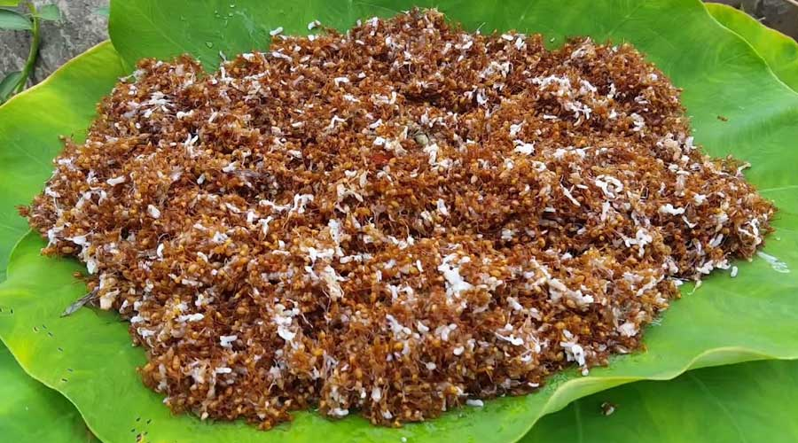

Let's Explore Bastar With Us
Bastar is a beautiful place in Chhattisgarh. Bastar District is a district of the state of Chhattishgarh in central India. Jagdalpur is the district headquarter. The district has an area of 4029.98 km². Bastar District is located in Chhattishgarh in the central parts of India. Bastar District, before splitting districts, was one of the largest districts in India. The district covers an area of around 6596.90 sq km. Bastar District is located in the southern part of Chhattishgarh and is situated at a height of 2000 ft plateau from sea level. Bastar had population of 834375 in census 2011, of which male and female were 413706 and 420669 respectively. Of the total population more than 70 percent are tribal people like Gond Tribe, Maria, Muria ,Dhruva, Bhatra, Halba Tribe, etc.
Places to visit in Bastar
There are different places to visit in Bastar and experience the thrill of adventures and following are the places
1.Waterfall
2.National Park
3.Temples
4.Treks etc
There are many places to visit here but the popular ones are as follows:
Nigra fall of India
.jpg)
Chitrakote Waterfall is a beautiful waterfall situated on the
river Indravati in Bastar district of Chhattisgarh state of India. It's also known as Nigra falls of India.
The height of this waterfall is 90 feet. The specialty of this waterfall is that during the rainy days, this water is reddish,
it looks absolutely white during the summer moonlight night.
Visit here
Tirathgarh Waterfall
Situated 35 kilometers from Jagdalpur, this stunning waterfall attracts tourists attention.
The tourists are so lost in the fascinating shade that they do not feel like going back from here.
Located on the river Munga bahar, this waterfall falls on the 300 feet below the stilted hillside of natural structures,
the natural fountain of milk foam and water droplets made from the fall of the water soothe the tourists. Thousands of years ago,
the cliffs of downstream down the river were struck down by a lunar crater with an earthquake,
and the staircase made by it, Numa Valley created this panoramic waterfall.Visit here....
National park
Kanger Valley National Park has been situated 24 km, Southeast of Jagdalpur, the headquarters of Bastar district, on Jagdalpur -Darbha Road. The National Park derives its name from the Kanger River, which flows centrally from the Northwest to the Southeast direction. You can have different adventure activities there like Kayaking etc. Visit here....
Temples
Danteshwari Temple is temple dedicated to Goddess Danteshwari, and is one of the 52 Shakti Peethas, shrines of Shakti, the divine feminine, spread across India. The temple built in the 14th century, is situated in Dantewada, a town situated 80 km from Jagdalpur Tehsil, And 350 KM From Raipur city, Capital of Chhattisgarh. It is well connected with NH30, and arount 7-8 Hourse Travel Distance by Road From The Raipur City. Danteshwari Temple is the center of attraction for thousands of tourists, in the district. Believed to be one among the 52 Shakti Pithas, this temple is easily accessible to the tourists round the year. Navaratris (Sharad Navaratri & Chaitra Navaratri) and Fagunmela (March-April) see lot of traditional festivity in this temple town.
Visit hereTreks
Dholkal Treks
The best journeys are those which are least planned and this trekking was one of them. The trek to Dholkal is 16kms both ways. There are 2 temples in the 2 mountain tops alongside, one Surya Temple and another Devi Mata temple in Dholkal about which nothing remains except a huge idol of Lord Ganesha. Visit here
Famous Food of Bastar
Chapda Chatni
India is known for its traditional unconventional dishes which tribes and local communities enjoy in all its states. Two famous tribal food items of Chhattisgarh's Bastar--Chapda chutney and Dona Pudga--have made it to a renowned international food menu. World famous British Chef, Borden Ramsay, has added this Chapda / Chaprah Chutney (of Chhattisgarh) in his favorite list and termed it as the world's best chutney. It is considered as good source of Formic acid, Iron, Calcium, Zinc, Vitamin B-12 and keeps the heart and eye healthy.
Thanks ForVisitingUs!!!!!!!
This webpage has been created by the team members of Shooting Stars 🌠